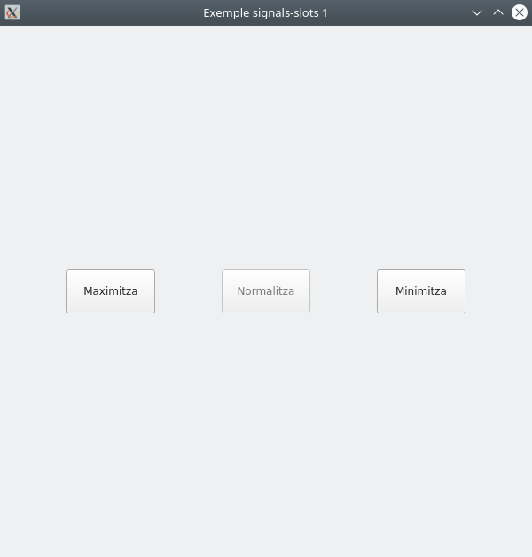

Signals - Slots
Senyals i ranures (signal & slots)
En l’anterior aplicació hem inclòs un botó, però que no executa ninguna acció al fer clic sobre ell. Necessitem connectar les accions a alguna funcionalitat. En Qt, açò s’aconseguix gràcies a les senyals i les ranures.
Una senyal és una notificació emesa pels components quan es produeix un esdeveniment.
Una ranura és el nom que Qt dona als rebedors de senyals. En Python, qualsevol funció pot ser una ranura, simplement connectant-li una senyal.
from PySide6.QtWidgets import QApplication, QMainWindow, QPushButton
from PySide6.QtCore import QSize
class MainWindow(QMainWindow):
def __init__(self):
QMainWindow.__init__(self)
self.setFixedSize(QSize(300, 300))
self.setWindowTitle("Exemple signals-slots 1")
pybutton = QPushButton('Clic', self)
#Connectem la senyal clicked a la ranura button_pressed
pybutton.clicked.connect(self.button_pressed)
pybutton.resize(100, 100)
pybutton.move(100, 100)
def button_pressed(self):
'''
S'executaà al rebre la notificació de que s'ha apretat el botó:
- Observeu que la consola imprimirà "Clic rebut!" al fer clic al botó
'''
print('Clic rebut!')
if __name__ == "__main__":
app = QApplication([])
mainWin = MainWindow()
mainWin.show()
app.exec()
Pots baixar el codi ací
En l'anterior codi, a més de connectar la senyal a l'slot, hem utilitzat les funcions resize i move per a assignar el tamany i situar un component.
Consulta la documentació per obtindre més informació sobre les senyals de QPushButton.
Activitat 4 (entregable)
Fes una aplicació amb tres botons. Inicialment, l'aplicació ocuparà el tamany normalitzat i els botons estaran centrats, tant verticalment com horitzontalment en tot moment: - Inicialment l'aplicació es mostrarà centrada sobre la pantalla amb el tamany normalitzat. - Al fer clic al botó de l'esquerra Maximitza, l'aplicació passarà a ocupar el tamany màxim definit. - Al fer clic al botó de la dreta Minimitza, l'aplicació passarà a ocupar el tamany mínim definit. - Al fer clic al botó central Normalitza, l'aplicació passarà a ocupar de nou el tamany normalitzat. - En cada cas, els botons es deshabilitzaran segons corresponga. És a dir, en tamany normalitzat, el botó corresponent a normalitzar el tamany estarà deshabilitat i la restat habilitats. Per a la resta de tamanys, aplicarem el mateix criteri. - El tamanys normal, màxim i mínim de finestra, així com els tamanys de botó estaran definits a un arxiu config.py - El tamany mínim mai podrà ser inferior a la suma dels tamanys de botó. - El title de l'aplicació mostrarà en cada moment en quin estat es troba Normalitzat, Maximitzat o Minimitzat


Encadenaments de senyals
Fixa't en l'exemple següent:
import sys
from PySide6.QtCore import Qt
from PySide6.QtWidgets import QApplication, QMainWindow, QPushButton
class MainWindow(QMainWindow):
def __init__(self):
super().__init__()
self.setWindowTitle("My App")
button = QPushButton("Press Me!")
button.setCheckable(True)
button.clicked.connect(self.the_button_was_clicked)
button.clicked.connect(self.the_button_was_toggled)
self.windowTitleChanged.connect(self.the_window_title_changed)
# Set the central widget of the Window.
self.setCentralWidget(button)
def the_button_was_clicked(self):
if self.windowTitle() == "La meua aplicació":
self.setWindowTitle("My App")
else:
self.setWindowTitle("La meua aplicació")
def the_button_was_toggled(self):
print("Clic rebut!")
def the_window_title_changed(self, window_title):
print("Window title changed: %s" % window_title)
app = QApplication(sys.argv)
window = MainWindow()
window.show()
app.exec()
Pots baixar el codi ací
Treballant amb senyals i ranures hem de tindre en compte: - Un únic senyal pot estar connectat a diverses ranures -> Clic desencadena l'execució de the_button_was_toggled i the_button_was_clicked. - Les ranures poden rebre arguments -> La ranura the_window_title_changed rep window_title com a argument. - Un únic esdeveniments pot desencadenar l'emissió de diverses senyals connectades entre elles a través d'una ranura -> Al fer clic es llança l'execució de the_button_was_clicked, que a la vegada desencadena l'esdeveniment windowTitleChanged.
Connectem components entre si
No sempre necessitem definir una funció per gestionar un esdeveniment, podem connectar components entre si per fer-ho:
import sys
from PySide6.QtWidgets import QApplication, QMainWindow, QLabel, QLineEdit, QVBoxLayout, QWidget
class MainWindow(QMainWindow):
def __init__(self):
super().__init__()
self.setWindowTitle("My App")
container = QWidget()
container.setFixedSize(240,100)
self.label = QLabel(container)
self.label.setFixedSize(200,20)
self.label.move(20, 20)
self.input = QLineEdit(container)
self.input.setFixedSize(200,20)
self.input.move(20, 60)
self.input.textChanged.connect(self.label.setText)
self.setCentralWidget(container)
app = QApplication(sys.argv)
window = MainWindow()
window.show()
app.exec()
Pots baixar el codi ací
Quan canviem el text del LineEdit, el senyal textChanged envia el text a la ranura a la qual està connectada, en aquest cas és la funció setText del Label, canviant així el seu text.
Senyals definits per l'usuari
Fins ara hem utilitzat els senyals predefinits pels components Qt. Definirem ara els nostres propis senyals. Això ens ajudarà a desacoblar (independitzar, fer que no depenguen unes de altres) les diferents part del programa. A més, ens permetrà fer la nostra aplicació responsiva, en compte de tindre un gran mètode update, podem partir el treball entre múltiples ranures i llançar-les amb una sola senyal.
Utilitzarem la classe Signal amb els tipus que ens interesse:
import sys
from PySide6.QtCore import Qt, Signal
from PySide6.QtWidgets import QApplication, QMainWindow
class MainWindow(QMainWindow):
message = Signal(str)
value = Signal(int, str, int)
another = Signal(list)
onemore = Signal(dict)
anything = Signal(object)
def __init__(self):
super().__init__()
self.message.connect(self.custom_slot)
self.value.connect(self.custom_slot)
self.another.connect(self.custom_slot)
self.onemore.connect(self.custom_slot)
self.anything.connect(self.custom_slot)
self.message.emit("my message")
self.value.emit(23, "abc", 1)
self.another.emit([1, 2, 3, 4, 5])
self.onemore.emit({"a": 2, "b": 7})
self.anything.emit(1223)
def custom_slot(self, a):
print(a)
app = QApplication(sys.argv)
window = MainWindow()
window.show()
app.exec()
Podeu baixar el codi ací
Com podeu observar, utilitzem el mètode emit per a llançar el senyal, que és capaç de transmetre informació de qualsevol tipus, però no és una bona idea que les ranures reben qualsevol tipus, ja que s'hauria de gestionar a la funció, cosa que la complicaria molt.
Pots crear senyals en qualsevol subclasse de QObject, inclòs components, finestres i dialegs.
Modifiquem la informació emesa pels senyals
Ja hem vist que els senyals poden emetre informació a les ranures. Però els senyals predefinits, sols envien dades que s'ha definit que envien en el seu disseny. Per exemple, QPushButton.clicked sols envia el valor de checked després de produir-se l'esdeveniment.
Per a botons no seleccionable, setCheckable(False), sempre enviarà el valor False.
Per solucionar este problema podem interceptar el senyal i modificar les dades:
import sys
from PySide6.QtCore import Qt
from PySide6.QtWidgets import QApplication, QMainWindow, QPushButton
class MainWindow(QMainWindow):
def __init__(self):
super().__init__()
btn = QPushButton("Press me")
btn.setCheckable(True)
btn.clicked.connect(lambda checked: self.button_clicked(checked, btn))
self.setCentralWidget(btn)
def button_clicked(self, checked, btn):
print(btn, checked)
app = QApplication(sys.argv)
window = MainWindow()
window.show()
app.exec()
Pots baixar el codi ací
En aquest cas, el senyal clicked emetrà l'estat de checked. La funció lambda intercepta el senyal i afegeix la informació de l'objecte btn.
Activitat 5
Fes una aplicació que tinga un botó. Al fer clic sobre ell, s'executarà una funció que rebrà l'estat del botó. A més, emetrà un nou senyal connectat a una altra funció, que rebrà l'estat del senyal i un número aleatori. Al rebre la nova funció el senyal, imprimirà per pantalla els valors del l'estat del botó i el número aleatori.
Esdeveniments
Cada interacció que l'usuari té amb una aplicació Qt és un esdeveniment. Hi ha molts tipus d'esdeveniments. Cada esdeveniment és un objecte que empaqueta informació sobre la interacció que l'ha produït. Els esdeveniments es passen a controladors d'esdeveniments (event handler) específics del component on s'ha produït la interacció.
Podem definir gestors d'esdeveniments personalitzats, modificant la manera com els vostres components responen a aquests esdeveniments. Els controladors d'esdeveniments es defineixen com qualsevol altre mètode, però el nom és específic per al tipus d'esdeveniment que gestionen.
Un dels principals esdeveniments que reben els components és el QMouseEvent. Els esdeveniments QMouseEvent es produixen en moure i clicar el ratolí sobre un component. Els següents gestors d'esdeveniments estan disponibles per gestionar els esdeveniments del ratolí:
| Gestor d'esdeveniment | Tipus d'esdeveniment |
|---|---|
| mouseMoveEvent | Moviment de ratolí |
| mousePressEvent | Botó del ratolí premut |
| mouseReleaseEvent | Botó de ratolí soltat |
| mouseDoubleClickEvent | Doble clic detectat |
Per exemple, fer clic en un component provocarà que s'envie un QMouseEvent al gestor d'esdeveniments .mousePressEvent del component. Aquest controlador pot utilitzar l'objecte d'esdeveniment per recollir informació sobre què ha passat, com ara què va desencadenar l'esdeveniment i on concretament es va produir.
Podeu interceptar esdeveniments heretant i anul·lant el mètode del controlador a la classe derivada. Podeu triar filtrar, modificar o ignorar esdeveniments, passant-los al controlador normal de l'esdeveniment cridant a la funció de classe pare amb mètode super().
Veiem açò amb una finestra principal.
En cada cas, e rebrà l'esdeveniment produït.
import sys
from PySide6.QtCore import Qt
from PySide6.QtWidgets import QApplication, QLabel, QMainWindow, QTextEdit
class MainWindow(QMainWindow):
def __init__(self):
super().__init__()
self.label = QLabel("Click in this window")
self.setCentralWidget(self.label)
def mouseMoveEvent(self, e):
self.label.setText("mouseMoveEvent")
def mousePressEvent(self, e):
self.label.setText("mousePressEvent")
def mouseReleaseEvent(self, e):
self.label.setText("mouseReleaseEvent")
def mouseDoubleClickEvent(self, e):
self.label.setText("mouseDoubleClickEvent")
app = QApplication(sys.argv)
window = MainWindow()
window.show()
app.exec()
Pots baixar el codi ací
Observeu que els esdeveniments de moviment del ratolí només es registren quan teniu el botó premut. Podeu canviar-ho afegint un atribut al widget central i cridant ade la finestra.
self.centralWidget().setAttribute(Qt.WA_TransparentForMouseEvents)self.setMouseTracking(False)També podeu notar que els esdeveniments de clic i de doble clic es desencadenen quan es prem el botó. Només l'esdeveniment de soltar es dispara quan es deixa de prémer.